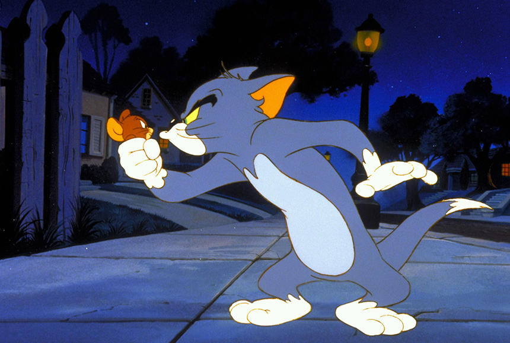

Tom and Jerry is an American animated media franchise and series of comedy short films created in 1940 by William Hanna and Joseph Barbera. Best known for its 161 theatrical short films by Metro-Goldwyn-Mayer, the series centers on the rivalry between the titular characters of a cat named Tom and a mouse named Jerry. Many shorts also feature several recurring characters. >see more on wikipedia
